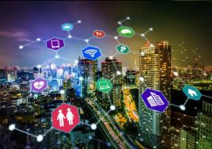
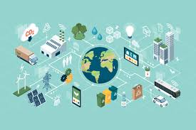
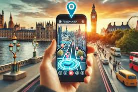

Las ciudades digitales representan la evolución de los centros urbanos tradicionales hacia entornos inteligentes, interconectados y sostenibles mediante el uso intensivo de tecnologías digitales. Este modelo de desarrollo urbano, también conocido como "smart cities", busca optimizar la gestión de recursos, mejorar la calidad de vida de los ciudadanos y promover la sostenibilidad ambiental. El presente ensayo analiza los fundamentos tecnológicos de las ciudades digitales, sus componentes esenciales, beneficios, desafíos y el impacto que están teniendo en la redefinición del concepto de vida urbana en el siglo XXI.